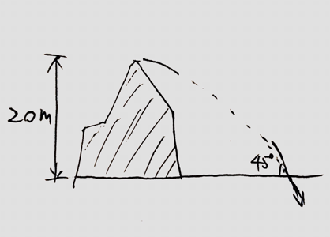

a. Find the maximum height the baseball can reach
b. Find the velocity when it is 30m high
c. Find the final velocity just before it hits the ground.
(Mid Term 1) A ball is thrown horizontally from the top of a 20-m high hill. It strikes the ground at an angle of . With what speed was it thrown?

Solution
Todo